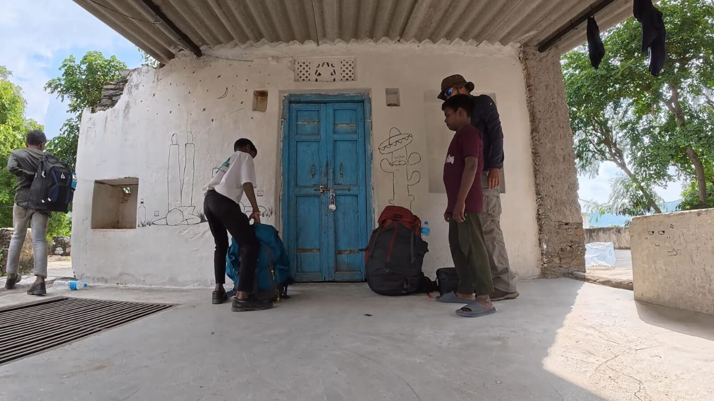
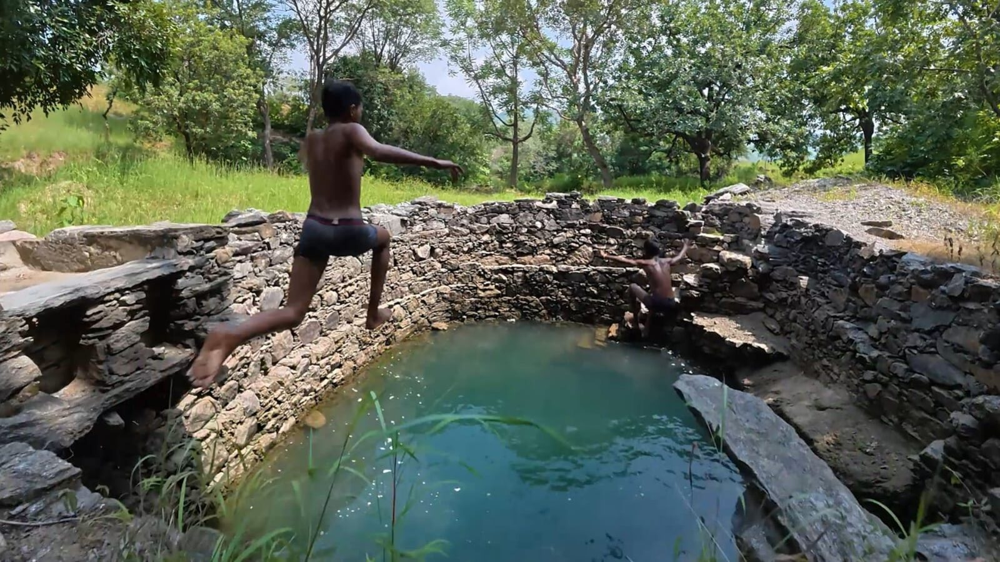

It was the last weekend of July
Saturday morning, I was preparing for another commercial batch for the Shiva Valley Trek. The group was arriving in the afternoon for our overnight trekking and camping itinerary.
I have been leading treks and operating trekking and camping activities in the Kumbhalgarh region for the last six years. There is a lot behind those six years — the routes, the mountains, the villages, the people and the experiences — but I will write about that journey some other time.
For me, that Saturday was just another working day. I checked my backpack and packed the essentials: walking equipment, a medical kit, walkie-talkies, rappelling equipment and a few other things we regularly carry for our outdoor programs.
The group arrived on time. After a short briefing, we started walking. Our campsite is around 5 kilometres uphill from the starting point, and to reach the mountain ridge, the trail passes through Pasun, a small mountain village sitting at the foothills of the Shiva Valley ridgeline. I gave this ridgeline its name around six years ago when I started working in this area.
There were seven people in the group that day. We walked through the monsoon landscape, talking, laughing and enjoying the trail. After around half an hour, we reached a waterfall.
And there they were. Three of my village friends — Bhiru, Bhavesh and Dinesh — were enjoying a bath in the waterfall. I stopped for a few minutes. They immediately reminded me of something.
“Nikhil bhaiya, aapne bola tha last weekend, hamein bhi rappelling ke liye leke chaloge.”
They were right. I had told them several times that one day, when I had some free time, I would take them for an adventure. I promised them that after finishing the trek, I would come back down the mountain and meet them at my room in the village. We would figure something out.
At that moment, I had no idea that this small promise would become the story of the next day.
Sunday

The next day, I came back to my room. The three boys were already waiting for me. Their expressions were basically saying, “Chalo chale?”
I looked at them and said, “Bhai, thak gaya hoon thoda. Rest karte hain, phir chalte hain.” But they weren't interested in my rest plan. They immediately replied that if I slept now, I wouldn't get up again. Instead, they suggested:
“Yahan se nikalte hain. Bavdi pe chalte hain. Mast nahayenge. Aapki thakan bhi mit jayegi. Aur rappelling ke liye wahi se aage chal lenge.”
I had no real argument left. The kids had successfully hijacked my rest day.
So we started preparing. It was around 1 PM on Sunday when we packed a few things, got into the car and drove towards the starting point of our little adventure.
I had also recently started working on my YouTube channel, NikhilOutdoors. So I thought, why not shoot this uncertain, completely unplanned adventure? There was no script. No proper plan. Just three kids, a mountain and a free Sunday. And that was enough.
The Bavdi
The monsoon changes the Kumbhalgarh Aravalis completely. The mountains become lush green. Seasonal streams start flowing. The air feels cleaner, and the entire landscape gets a different character.
Coming from Rajasthan, I often describe this part of the Aravalis as the “Himachal of Rajasthan.” It has mountains, valleys, rocky ridges, dense monsoon vegetation and a landscape rich in flora and fauna.
Water is an important part of life in these mountains. Across the region, villagers use traditional water sources and small water structures that collect or hold water as it flows down from the hills during the monsoon. There are also ponds, but these local water sources are an important part of everyday life. The boys knew several places where they could go for a swim. Fortunately, one of them was directly on our route.

We reached the bavdi. The kids jumped into the water before I had even properly set up the camera. I shouted, “Are bhai logo! Video mein aana hai ya nahi? Isko shoot bhi karna hai! Bahar niklo paani se. Wapas jump karna jab main bolu!”
And suddenly the three boys realised — this wasn't just an adventure. We were making a YouTube video. “Whooooooo!” “Video! Video! Video!” Their excitement doubled instantly.
I was exhausted. The previous 24 hours had involved leading a commercial trek, climbing to the campsite, managing the group and coming back down. But after seeing them so excited, I stopped thinking about being tired. I clicked a few shots and jumped into the water myself.
And that was probably the best decision of the day. The moment I went deeper into the water, everything became quiet. After almost 24 hours of physical work, the cold water felt like complete peace. My body was tired, but somehow my mind became completely calm.
We spent some time there — swimming, laughing and shooting a few moments. After that, everyone seemed to have a completely new energy. The rest of the journey was still waiting for us.
Three kilometres to the rock
From the bavdi, we had another difficult climb. Around three kilometres of steep ascent remained before reaching the rappelling point. For me, the challenge was not only the climb. I was already tired, and now I was also trying to shoot the journey. The boys helped me wherever they could. We stopped several times, took some rest and continued climbing.
It was around 4:30 PM when I started becoming conscious of the time. My plan was simple: reach the rock as early as possible, complete the rappelling and return to the village before darkness. The boys were my responsibility, and I didn't want to take any unnecessary risk by being on the mountain after dark.
So I told them, “Chalo, ab nikalte hain. Jitna shoot karna hai, raste mein karte hain.” We started climbing again.
By around 5:30 PM, we reached the rappelling point. The location is a steep granite rock, roughly 50 feet high and around 80 degrees in places. I had discovered this rock while developing my commercial trekking program in the area. It sits between the foothills and our mountain-top campsite, which makes it a useful adventure section during our trekking programs.
I have been training trekkers and students in outdoor activities for years, so I already knew the safety considerations of this particular location. For the boys, however, this was something completely different. Bhiru had some previous experience with rappelling. Bhavesh and Dinesh had never done it before.
First descent

I started preparing the equipment. One main rope for rappelling. Another rope for belaying. Harnesses. Carabiners. Descending devices. Everything had to be checked properly before anyone went near the edge.
Bhiru knew some of the basic procedures, so he was already curious about what was going to happen. I explained the equipment and the basic technique to all three of them. Then I went down first. I wanted them to see the body position, how to control the descent and how to move safely over the rock.
Once I came back up, I looked at the boys. The excitement was there. But so was the nervousness. I looked at them and asked jokingly, “Kya hua darling? Gaye kya?” They immediately replied, “Nahi bhaiya!” Their words said they were ready. Their faces were telling a slightly different story.
One by one, they started descending. Bhiru went first. He came down and immediately shouted:
“Maza aa gaya! Aa jao bhaiyo, bahut maza aayega!”
Bhavesh was more nervous. He was clearly uncomfortable with the height. But after taking those first few steps and understanding how the equipment worked, his fear started disappearing. The same thing happened with Dinesh. Something changed once they were actually on the rope. The fear slowly became excitement.
And soon, the same kids who were nervous at the top were asking me, “Bhaiya, ek baar aur karna hai.” So they went again. And again. All three boys ended up doing the rappelling at least two or three times that afternoon.
For me, that was the best part. Not because they had completed an adventure activity. But because I could actually see the transition — from hesitation to confidence, from fear to excitement.
Sunset on the Aravalis
By the time we finished, the sun was beginning to go down. We climbed back up through the narrow gully to the starting point and started packing the equipment. I asked the boys to help me. Three people, a few ropes and pieces of equipment can take much longer to organise when everyone is tired. But with everyone helping, we managed to pack everything within a few minutes.
Then we stopped. The sunset that evening was beautiful. During the monsoon, the atmosphere around these mountains can become incredibly clear. Much of the dust settles after the rains, and the landscape can look almost unreal — sharp, clean and detailed, almost like watching a 4K video. The granite rocks, green valleys and distant ridges were slowly changing colour.
The boys were talking among themselves. They were already imagining the video. They were talking about showing it to their school friends. They were excited that their adventure was going to be on YouTube. For them, the rappelling wasn't only something they had experienced anymore. It was something they were going to proudly tell everyone about.
Meanwhile, the jungle around us was getting darker. It was time to leave.
The walk back to Pasun
We started descending towards the village. There wasn't much talking from my side anymore. The tiredness had finally caught up with me. As we came closer to Pasun, the valley became quiet.
And then I heard something. The evening aarti from the village temple. After spending the entire day in the mountains, walking through rocky terrain, swimming in the bavdi and rappelling down a granite wall, that sound reached me differently. It was a very peaceful, almost spiritual moment.
The mountains were getting dark. The day was ending. And somewhere below us, the village was returning to its normal evening rhythm.
We reached the village at around 7 PM. The boys' homes were only a few steps away from my room. I went back to my room, prepared some food and finally sat down. I was completely exhausted. But it was a different kind of tiredness. It was the satisfaction that comes after a completely unplanned day that somehow turns out to be exactly what you needed. By around 9 PM, I was asleep. A very deep sleep.
Some adventures are not planned
This day was different from a commercial trekking batch. It was different from a personal adventure. There was no itinerary. No fixed schedule. No carefully designed story.
The entire plan started because three village kids reminded me of a promise I had made. I had planned to rest. They had other plans. And somehow, their plan became one of my favourite kinds of adventures — the ones you don't plan.
I have known these boys because they are my neighbours in Pasun. I rented a room in the village several years ago, and over time, our relationship became more than just that of a trek leader and local children. Sometimes we cook together. Sometimes they are simply playing around my room. Our ages are very different, but friendship doesn't always care about age.
For them, the mountains around Pasun are not an adventure destination. They are home. The rocks we carefully approach, the trails we call trekking routes, the water sources we stop to photograph — these are simply parts of their everyday landscape. Maybe that is why they moved so comfortably through terrain that would feel unfamiliar to many people.
That Sunday started with me thinking that I was too tired to go anywhere. It ended with three boys rappelling down a granite wall, a beautiful monsoon sunset, a quiet walk back through the mountains and the sound of a village temple filling the valley.
“Sometimes the best stories are the ones you never planned to tell.”
Expedition details
| Experience | A Free Day with Village Friends — an unplanned adventure |
| Location | Pasun village & Shiva Valley ridgeline, Kumbhalgarh region |
| District | Rajsamand, Rajasthan |
| Landscape | Southern Aravallis / Mewar — the “Himachal of Rajasthan” |
| Activities | Bavdi (stepwell) swim & rock rappelling |
| Rappel rock | Granite face, approx. 50 ft high, up to ~80° in places |
| Season | Monsoon |
| Time of adventure | Late July, a free Sunday |
| Group | Three village friends — Bhiru, Bhavesh & Dinesh |
Try rappelling for yourself
The same granite walls and monsoon ridgelines around Kumbhalgarh — with certified instructors, checked gear and no experience needed. Fear optional. Grin guaranteed.
Plan your trip